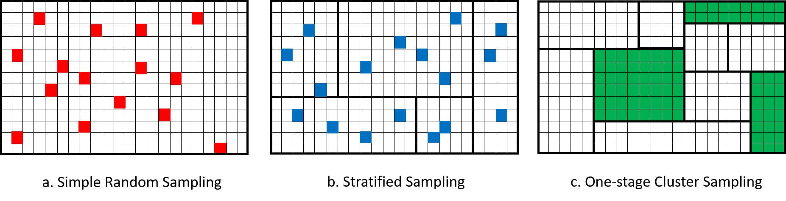
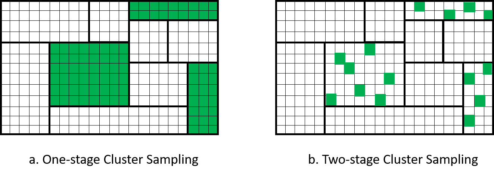

5 Cluster Sampling
In practice, observation units (units that we take measurements or surveys on) are organized or administered by clusters, for example: students in schools, patients in hospitals, etc. In these cases, it is often easier, more convenient, and cheaper to construct the sampling frame based on the list of clusters, rather than the list of individuals. The sampling scheme that accommodates this reality is called cluster sampling, where the sampling units are clusters (e.g., hospitals) instead of observation units (e.g., patients). That is, we sample on the cluster level, instead of individual level.
In cluster sampling, the clusters are often called the primary sampling units (or psus) and the observation units are called secondary sampling units (or ssus).
5.1 One-Stage Cluster Sampling
5.1.1 Sampling Procedure
In one-stage cluster sampling, we
divide the population into \(N\) non-overlapping clusters,
do SRS to choose \(n\) clusters into the sample,
for each sampled cluster \(i\), include all observation units \(j\).
Figure 5.1 visualizes a comparison between SRS, stratified sampling and one-stage cluster sampling. We can see that although both stratified sampling and cluster sampling divide the population into subgroups: in stratified sampling, we call them strata, in cluster sampling, we call them clusters. However, in stratified sampling, we sample units from every subgroups, while in cluster sampling, we only sample some of the subgroups. Moreover, in one-stage cluster-sampling, we include all observation units into our sample.

Figure 5.1: Comparison of SRS, Stratified Sampling and One-Stage Cluster Sampling.
5.1.2 Notation
\(N\): number of clusters (psus) in the population
\(n\): number of clusters (psus) in the sample
\(U\): the population of \(N\) clusters (psus)
\(S\): the sample of \(n\) clusters (psus) chosen from \(U\)
\(U_i\): the collection of observation units that belongs to the \(i\)th cluster in the population
\(S_i\): the collection of observation units that belongs to the \(i\)th cluster in the sample.
- For one-stage cluster sampling, if the \(i\)th cluster is selected into the sample, i.e., \(i \in S\), then all units in the cluster will be selected into the sample, so \(S_i = U_i\).
\(M_i\) is the number of observation units (ssus) in the \(i\)th cluster
\(M_0 = \sum_{i=1}^N M_i\) is the number of observation units (ssus) in the entire population.
\(y_{ij}\): the measurement of \(Y\) from the \(j\)th unit of the \(i\)th cluster.
\(t_{U,i} = \sum_{j \in U_i}y_{ij}\) is the total of the \(i\)th cluster.
- In one-stage cluster sampling, since we include all units of a selected cluster into the sample the population total of the \(i\)th cluster is the sample as the sample total of the \(i\)th cluster, that is: \(t_{U,i} = T_{S,i}\). So we will denote \(t_i = t_{U,i}\) for short in one-stage cluster sampling.
\(t_U = \sum_{i=1}^N t_{U,i} = \sum_{i=1}^N\sum_{j\in U_i}y_{ij}\) is the population total.
\(\overline{y}_{U,i} = \frac{t_{U,i}}{M_i}\) is the mean response of the \(i\)th cluster.
- In one-stage cluster sampling, since we include all units of a selected cluster into the sample, \(\overline{y}_{U,i} = \overline{Y}_{S,i}\).
\(\overline{y}_U = \frac{t_U}{M_0}\) is the overall mean of the whole population.
5.1.3 HT Estimator
Recall from Section 2.3.3 that the general Horvitz-Thompson estimator for the population total takes the form:
\[ \widehat{T}_{HT} = \sum_{i \in S}\frac{y_i}{\P(Z_i = 1)} = \sum_{i=1}^N \frac{Z_iy_i}{\pi_i}, \] where \(\pi_i\) is the probability that the \(i\)th observation unit is included in the sample. Similar to what we did in stratified sampling, in cluster sampling, we switch the enumeration: instead of enumerating (i.e., listing) all observation units, we will first list out the clusters then list the observation units within each cluster. The general HT estimator formula becomes: \[\begin{equation} \widehat{T}_{HT} = \sum_{i\in S}\sum_{j\in S_i}\frac{y_{ij}}{\pi_{ij}} \tag{5.1} \end{equation}\]
So, in order to construct the HT estimator, we need to know the probability that an observation unit is included in the sample. Now, in the case of one-stage cluster sampling, in order for the \(j\)th observation unit of the \(i\)th cluster to be selected into the sample, the \(i\)th cluster needs to be selected. Once the \(i\)th cluster is selected, the \(j\)th unit in the \(i\)th cluster is selected for sure because this is one-stage cluster sampling. Since the clusters are selected using SRS by choosing \(n\) clusters from a population of \(N\) clusters, we have:
\[ \pi_{ij} = \P(i\tx{th cluster is selected}) = \frac{n}{N}. \]
Plug this into the formula of the HT estimator for the population total, we have:
\[ \widehat{T}_{HT} = \sum_{i\in S}\sum_{j\in S_i}\frac{N}{n}y_{ij} = \frac{N}{n}\sum_{i\in S}t_i. \]
So, the HT estimator for the population total under one-stage cluster sampling is similar to the HT estimator in Equation (2.9) under SRS. The only difference is that here, we replace \(y_i\), the individual response, by \(t_i\), the cluster total.
Since the population has \(M_0 = \sum_{i=1}^N M_i\) observation units, and the population mean is taken on the observation unit level, so the HT estimator of the population mean is:
\[ \widehat{\overline{Y}}_{HT} = \frac{1}{M_0}\widehat{T}_{HT}. \]
Example 5.1 Consider a population of 6 clusters with the following unit responses:
| Cluster \(i\) | Number of units (\(M_i\)) | Response of 1st unit \(y_{i1}\) | \(y_{i2}\) | \(y_{i3}\) | \(y_{i4}\) | \(y_{i5}\) |
|---|---|---|---|---|---|---|
| 1 | 5 | 3 | 5 | 6 | 2 | 0 |
| 2 | 3 | 1 | 4 | 7 | ||
| 3 | 3 | 10 | 7 | 3 | ||
| 4 | 2 | 1 | 5 | |||
| 5 | 4 | 1 | 2 | 4 | 6 | |
| 6 | 1 | 6 |
Suppose I take an SRS of the clusters, and sampled cluster 1, 3 and 4. We have
\[\begin{align*} t_1 & = 3 + 5 + 6 + 2 + 0 = 16 \\ t_3 & = 10 + 7 + 3 = 20 \\ t_4 & = 1 + 5 = 6 \end{align*}\]
The HT estimate for the population total is:
\[ \widehat{T}_{HT} = \frac{N}{n}\sum_{i\in S}t_i = \frac{6}{3}\times (16+20+6) = 84. \]
The population has:
\[ M_0 = \sum_{i=1}^N M_i = 5+3+3+2+4+1 = 18 \tx{ (obs. units)} \]
So the HT estimate of the population mean is:
\[ \widehat{\overline{Y}}_{HT} = \frac{1}{M_0}\widehat{T}_{HT} = \frac{84}{18} = 4.6667. \]
We can use the variance formula from SRS to calculate the variance for the HT estimators under one-stage cluster sampling, replacing \(y_i\) by \(t_i\), that is: \[\begin{align*} Var_{1clus}(\widehat{T}_{HT}) & = N^2\left(1-\frac{n}{N}\right)\frac{s_{U,t}^2}{n} \tag{5.2} \\ Var_{1clus}(\widehat{\overline{Y}}_{HT}) & = \frac{1}{M_0^2}Var_{1clus}(\widehat{T}_{HT}) \end{align*}\] where \(s_{U,t}^2 = \frac{1}{N-1}\sum_{i=1}^N(t_i - \overline{t}_U)^2 = \frac{1}{N-1}\sum_{i=1}^N(t_i - \frac{t_U}{N})^2\) is the population standard deviation of the cluster totals.
Proof. Note that the variance formula of the general HT estimator in Equation (2.12) is
\[ Var(\widehat{T}_{HT}) = \sum_{i=1}^N\frac{y_i^2}{\pi_i^2}\pi_i(1-\pi_i) + 2\sum_{i\ne j}\frac{y_iy_j}{\pi_i\pi_j}(\E[Z_iZ_j] - \pi_i\pi_j) \]
Now, we apply this to the case of one-stage cluster sampling. As discussed earlier in this section, the probability for the \(j\)th unit of the \(i\)th cluster to be included in the sample is \(\pi_{ij} = \frac{n}{N}\).
Consider the \(j\)th unit of the \(i\)th cluster and the \(l\)th unit of the \(h\)th cluster: under one-stage cluster sampling:
If \(i = h\), meaning that the two units are in the same cluster, then as long as cluster \(i\)th is sampled, both units are sampled, so \(\E[Z_{ij}Z_{hl}] = \E[Z_i] = \frac{n}{N}\)(from SRS on the clusters).
If \(i \ne h\), meaning that the two units are in different clusters, then the two units are sampled if both clusters \(i\) and \(h\) are sampled: \(\E[Z_{ij}Z_{hl}] = \E[Z_i Z_h] = \frac{n(n-1)}{N(N-1)}\) (result from SRS on the clusters).
Plugging these into the variance formula, we have \[\begin{align*} Var_{1clus}(\widehat{T}_{HT}) & = \sum_{i=1}^N\sum_{j\in U_i}\frac{y_{ij}^2}{\pi_{ij}^2}\pi_{ij}(1-\pi_{ij}) \\ & \qquad \qquad + 2\sum_{i=1}^N\sum_{j \ne l}\frac{y_{ij}y_{il}}{\pi_{ij}\pi_{il}}(\E[Z_{ij}Z_{il}] - \pi_{ij}\pi_{il}) \\ & \qquad \qquad + 2\sum_{i\ne h}\sum_{j \in U_i, l\in U_h}\frac{y_{ij}y_{hl}}{\pi_{ij}\pi_{hl}}(\E[Z_{ij}Z_{hl}] - \pi_{ij}\pi_{hl}) \\ & = \sum_{i=1}^N\sum_{j\in U_i}\frac{y_{ij}^2}{(n/N)^2}\frac{n}{N}\left(1-\frac{n}{N}\right) \\ & \qquad \qquad + 2\sum_{i=1}^N\sum_{j \ne l}\frac{y_{ij}y_{il}}{(n/N)^2}\left(\frac{n}{N} - \frac{n^2}{N^2}\right) \\ & \qquad \qquad + 2\sum_{i\ne h}\sum_{j \in U_i, l\in U_h}\frac{y_{ij}y_{hl}}{(n/N)^2}\left(\frac{n(n-1)}{N(N-1)} - \frac{n^2}{N^2}\right) \\ & = \sum_{i=1}^N \frac{1}{(n/N)^2}\frac{n}{N}\left(1-\frac{n}{N}\right) \left(\sum_{j \in U_i}y_{ij}^2 + 2\sum_{j \ne l}y_{ij}y_{il}\right) \\ & \qquad \qquad + 2\frac{1}{(n/N)^2}\left(\frac{n(n-1)}{N(N-1)} - \frac{n^2}{N^2}\right) \sum_{i=1}^N\sum_{j \in U_i}\Big(y_{ij}\sum_{h\ne i}\sum_{l \in U_h}y_{hl}\Big) \\ & = \sum_{i=1}^N \frac{1}{(n/N)^2}\frac{n}{N}\left(1-\frac{n}{N}\right) t_i^2 \\ & \qquad \qquad + 2\frac{1}{(n/N)^2}\left(\frac{n(n-1)}{N(N-1)} - \frac{n^2}{N^2}\right) \sum_{i=1}^N\sum_{j \in U_i}\Big(y_{ij}\sum_{h\ne i}t_h\Big) \\ & = \sum_{i=1}^N \frac{1}{(n/N)^2}\frac{n}{N}\left(1-\frac{n}{N}\right) t_i^2 \\ & \qquad \qquad + 2\frac{1}{(n/N)^2}\left(\frac{n(n-1)}{N(N-1)} - \frac{n^2}{N^2}\right) \sum_{i=1}^N\sum_{h\ne i}t_h\sum_{j \in U_i}y_{ij} \\ & = \frac{1}{(n/N)^2}\frac{n}{N}\left(1-\frac{n}{N}\right) \sum_{i=1}^N t_i^2 \\ & \qquad \qquad + 2\frac{1}{(n/N)^2}\left(\frac{n(n-1)}{N(N-1)} - \frac{n^2}{N^2}\right) \sum_{i=1}^N\sum_{h\ne i}t_ht_i \\ & = N^2\left(1-\frac{n}{N}\right)\frac{s_{U,t}^2}{n} \end{align*}\] where the last equation follows from SRS results.
Since \(\widehat{\overline{Y}}_{HT} = \frac{1}{M_0}\widehat{T}_{HT}\), the variance of the HT estimator for the population mean under one-stage cluster sampling is:
\[ Var_{1clus}(\widehat{\overline{Y}}_{HT}) = \frac{1}{M_0^2}Var_{1clus}(\widehat{T}_{HT}). \]
The estimated variance for the HT estimators can be obtained by replacing the population quantity \(s_{U,t}^2\) by its sample counterpart \(S_{S,t}^2\):
\[ S_{S,t}^2 = \frac{1}{n-1}\sum_{i\in S}\left(t_i - \frac{\sum_{i\in S}t_i}{n}\right)^2 = \frac{1}{n-1}\sum_{i\in S}\left(t_i - \overline{T}_S\right)^2. \]
Example 5.2 Continue with Example 5.1. The sample mean of cluster total is:
\[ \overline{T}_S = \frac{\sum_{i\in S}t_i}{n} = \frac{t_1+t_3+t_4}{3} = \frac{16+20+6}{3} = 14 \]
So we can calculate the sample standard deviation of the cluster totals as
\[\begin{align*} S_{S,t}^2 & = \frac{1}{n-1}\sum_{i\in S}\left(t_i - \frac{\sum_{i\in S}t_i}{n}\right)^2 \\ & = \frac{1}{3-1}\times \left\{(16-14)^2+(20-14)^2+(6-14)^2\right\} \\ & = 52 \end{align*}\]
and the variances of the HT estimates are: \[\begin{align*} \widehat{Var}_{1clus}(\widehat{T}_{HT}) & = N^2\left(1-\frac{n}{N}\right)\frac{S_{S,t}^2}{n} \\ & = 6^2\times \left(1-\frac{3}{6}\right)\times \frac{52}{3} = 312.\\ \widehat{Var}_{1clus}(\widehat{\overline{Y}}_{HT}) & = \frac{1}{M_0^2}\widehat{Var}_{1clus}(\widehat{T}_{HT}) = \frac{1}{18^2}\times 312 = 0.9630. \end{align*}\]
The 95% CI are:
For population total: \(\widehat{T}_{HT} \pm 1.96 \times \sqrt{\widehat{Var}_{1clus}(\widehat{T}_{HT})} = 84 \pm 1.96 \times \sqrt{312} = (49.3795, 118.6205)\)
For population mean: \(\widehat{\overline{Y}}_{HT} \pm 1.96 \times \sqrt{\widehat{Var}_{1clus}(\widehat{\overline{Y}}_{HT})} = 4.6667 \pm 1.96 \times \sqrt{0.9630} = (2.7433, 6.5901)\).
5.1.4 Comparing to SRS
To simplify the comparison between SRS and one-stage cluster sampling, we assume that the clusters are equal-sized: that is, we assume that each cluster has \(M\) observation units (ssus). In this case, \(M_i = M\) for all \(i \in U\) and \(M_0 = \sum_{i=1}^N M_i = NM\).
Since we are using HT estimators, which are always unbiased, we only need to compare the variances under two sampling schemes: SRS vs. one-stage cluster sampling.
From the variance formula in Equation (5.2), we can write the variance of the HT estimator under one-stage cluster sampling with equal-sized clusters as:
\[\begin{align*} Var_{1clus}(\widehat{T}_{HT}) & = N^2\left(1-\frac{n}{N}\right)\frac{s_{U,t}^2}{n} \\ & = \frac{N^2}{n}\left(1-\frac{n}{N}\right)\frac{1}{N-1}\sum_{i=1}^N\left(t_i - \frac{t_U}{N}\right)^2 \\ & = \frac{N^2}{n}\left(1-\frac{n}{N}\right)\frac{1}{N-1}\sum_{i=1}^N \left(M_i\overline{y}_{U,i} - \frac{M_0\overline{y}_U}{N}\right)^2 \\ & = \frac{N^2}{n}\left(1-\frac{n}{N}\right)\frac{1}{N-1}\sum_{i=1}^N \left(M\overline{y}_{U,i} - \frac{MN\overline{y}_U}{N}\right)^2 \\ & = \frac{N^2}{n}\left(1-\frac{n}{N}\right)\frac{1}{N-1}\sum_{i=1}^N M^2(\overline{y}_{U,i} - \overline{y}_U)^2 \\ & = \frac{N^2}{n}\left(1-\frac{n}{N}\right)\frac{M}{N-1}\sum_{i=1}^N M(\overline{y}_{U,i} - \overline{y}_U)^2 \\ & = \frac{N^2}{n}\left(1-\frac{n}{N}\right)\frac{M}{N-1}\sum_{i=1}^N\sum_{i\in U_i}(\overline{y}_{U,i} - \overline{y}_U)^2 \\ & = \frac{N^2}{n}\left(1-\frac{n}{N}\right)\frac{M \times SSB}{N-1} \end{align*}\]
Now consider SRS. We need to consider SRS where the sample sizes are equal. In one-stage cluster sampling, by sampling \(n\) clusters, each of \(M\) observation units, from a population of \(N\) clusters, we effectively sample \(nM\) observation units from a population of \(NM\) units. So the variance of the HT estimator when sampling the same number of observation units under SRS, instead of one-stage cluster sampling is: (using SRS formula in Equation (2.14))
\[\begin{align*} Var_{SRS}(\widehat{T}_{HT}) & = (NM)^2\left(1-\frac{nM}{NM}\right)\frac{s_{U,y}^2}{nM} \\ & = N^2\left(1-\frac{n}{N}\right)\frac{Ms_{U,y}^2}{n} \\ & = \frac{N^2}{n}\left(1-\frac{n}{N}\right) \frac{M}{M_0 - 1}\sum_{i=1}^N\sum_{j\in U_i} (y_{ij} - \overline{y}_U)^2 \\ & = \frac{N^2}{n}\left(1-\frac{n}{N}\right) \frac{M \times SST}{NM - 1} \end{align*}\]
Therefore, the design effect is:
\[\begin{equation} DE = \frac{Var_{1clus}(\widehat{T}_{HT})}{Var_{SRS}(\widehat{T}_{HT})} = \frac{\frac{N^2}{n}\left(1-\frac{n}{N}\right)\frac{M \times SSB}{N-1}}{\frac{N^2}{n}\left(1-\frac{n}{N}\right) \frac{M \times SST}{NM - 1}} = \frac{\frac{SSB}{N-1}}{\frac{SST}{NM-1}} = \frac{MSB}{MST} \tag{5.3} \end{equation}\]
where \(MSB\) and \(MST\) are defined based on the ANOVA table for equal-sized clusters:
| Sum of Squares | Formula | Degree of Freedom (df) | Mean of Squares |
|---|---|---|---|
| \(SSB\) | \(\sum_{i=1}^N\sum_{j\in U_i}(\overline{y}_{U,i}-\overline{y}_U)^2\) \(= \sum_{i=1}^N M(\overline{y}_{U,i} - \overline{y}_U)^2\) | \(N-1\) | \(MSB = \frac{SSB}{N-1}\) |
| \(SSW\) | \(\sum_{i=1}^N\sum_{j\in U_i}(y_{ij} - \overline{y}_{U,i})^2\) | \(M_0 - N = N(M-1)\) | \(MSW = \frac{SSW}{N(M-1)}\) |
| \(SST\) | \(\sum_{i=1}^N\sum_{j\in U_i} (y_{ij} - \overline{y}_U)^2\) | \(M_0 - 1 = NM - 1\) | \(MST = \frac{SST}{NM-1}\) |
Notes: The ANOVA table is often used in the analysis of experiments, but we can also use it here to facilitate our comprison of SRS and one-stage cluster sampling. In the ANOVA table:
The sum of squares are taken over all observation units.
The degree of freedom tells us the number of independent values in the vector formed by the summands inside the summations (i.e., the squares of distinces). In here, it equals the number of distinct quantities on the left-hand-side of the differences inside the squares minus the number of distinct quantities on the right-hand-side.
The mean of squares equals the sum of squares divided by the degree of freedom.
We can calculate the sums and/or means of squares from sample data by replacing population quantities by sample quantities in the ANOVA table.
Example 5.3 A student wants to estimate the average GPA in his dormitory. Instead of obtaining a listing of all students in the dorm and conducting an SRS, he notices that the dorm consists of 100 suites, each with 4 students; he chooses 5 of those suites at random, and asks every person in the 5 suites what her or his GPA is. The results are as follows.
| Student | Suit 1 | Suit 2 | Suit 3 | Suit 4 | Suit 5 |
|---|---|---|---|---|---|
| 1 | 3.08 | 2.36 | 2.00 | 3.00 | 2.68 |
| 2 | 2.60 | 3.04 | 2.56 | 2.88 | 1.92 |
| 3 | 3.44 | 3.28 | 2.52 | 3.44 | 3.28 |
| 4 | 3.04 | 2.68 | 1.88 | 3.64 | 3.20 |
| Total (\(t_i\)) | 12.16 | 11.36 | 8.96 | 12.96 | 11.08 |
| Mean (\(\overline{y}_{U,i}\)) | 3.04 | 2.84 | 2.24 | 3.24 | 2.77 |
First, note that \(N = 100\), \(M = 4\), and \(n = 5\).
The sample overall mean is:
\[ \overline{Y}_S = \frac{1}{nM}\sum_{i \in S} = \frac{1}{5\times 4}\times(12.16 + 11.36 + 8.96 + 12.96 + 11.08) = 2.826. \]
Now we can calculate the sample sums of squares: \[\begin{align*} \widehat{SSB} & = \sum_{i\in S}M(\overline{y}_{U,i}-\overline{y}_U)^2 \\ & = 4 \times \Big\{(3.04 - 2.826)^2 + (2.84 - 2.826)^2 + (2.24 - 2.826)^2 \\ & \qquad \qquad + (3.24 - 2.826)^2 + (2.77 - 2.826)^2 \Big\} \\ & = 2.2557. \\ \widehat{SST} & = \sum_{i\in S}\sum_{j\in S_i} (y_{ij} - \overline{y}_U)^2 \\ & = (3.08 - 2.826)^2 + (2.60 - 2.826)^2 + ... + (3.20 - 2.826)^2 \\ & = 5.0313. \end{align*}\]
The sample means of squares are: \[\begin{align*} \widehat{MSB} & = \frac{\widehat{SSB}}{n-1} = \frac{2.2557}{5-1} = 0.5639. \\ \widehat{MST} & = \frac{\widehat{SST}}{nM-1} = \frac{5.0313}{5\times 4 - 1} = 0.2648. \end{align*}\]
Since \(\widehat{MSB} > \widehat{MST}\), we lose efficiency due to cluster sampling. We can actually see this beforehand in the data table: the cluster means (\(\overline{y}_{U,i}\)) are different from one another. Note that here, \(\overline{y}_{U,i} = \overline{Y}_{S,i}\) because we include all units of the cluster into the sample so population cluster total/mean is equal to sample cluster total/mean.
The design effect is
\[ \widehat{DE} = \frac{\widehat{MSB}}{\widehat{MST}} = \frac{0.5639}{0.2648} = 2.1295 \]
In fact, we are losing \(100 \times (2.1295-1)\% = 112.95\%\) efficiency.
Looking at the design effect formula in Equation (5.3), we can see that cluster sampling will be worse (i.e., lose efficiency) compared to SRS if the the between-cluster variation is large. This is opposite with what we see in stratified sampling: if between-stratum variation is large, we gain efficiency, i.e., we have lower variances. The intuition for this is:
In stratified sampling, we sample units from all strata, so the sample will be more representative of the population if the stratum means are different from one another. With stratified sampling, we are guaranteed to have all types of units in our sample: ones that tend to have higher responses or ones that tend to have lower responses, so the estimate we obtain will be closer to the truth.
In cluster sampling, we only sample from some clusters. So when we repeat the sampling procedure, each time we will include observation units from some clusters and leave out observation units from the other clusters. If the cluster means are different from one another, our estimate will be different each time we repeat the sampling procedure, depending on which specific clusters our randomization happens to dictate us to choose. As a result, depending on randomization, i.e., luck, our estimate can be overestimating or underestimating the truth.
So, conversely, we can be protected from the effect of cluster sampling if the between-cluster variation is small, which means the clusters are similar to one another. Equivalently, if clusters are already representative of the population, we don’t need to worry about missing out any cluster when doing random sampling. In the literature, metrics are proposed to inform us about this, including the intraclass correlation coefficient (ICC) and adjusted R squared (\(R_a^2\)).
5.1.4.1 Intraclass Correlation Coefficient
The ICC is defined as
\[ ICC = 1-\frac{M}{M-1}\frac{SSW}{SST}. \]
Since \(SST = SSW + SSB\) and the SS’s are sum of squares so they are greater or equal to 0, so \(SSW \le SST\), \(0 \le \frac{SSW}{SST} \le 1\) and
\[ -\frac{1}{M-1} \le ICC \le 1 \]
If clusters are perfectly homogeneous, then all units in a cluster have the same respond, so \(SSW = 0\), and \(ICC = 1\).
We can prove that \[ DE = \frac{MSB}{MST} = \frac{NM-1}{M(N-1)}[1+(M-1)ICC] \]
Proof. We have \[\begin{align*} \frac{NM-1}{M(N-1)}[1+(M-1)ICC] & = \frac{NM-1}{M(N-1)}\left[1 + (M-1)\left(1 - \frac{M}{M-1}\frac{SSW}{SST}\right)\right] \\ & = \frac{NM-1}{M(N-1)}\left[1 + (M-1) \frac{(M-1)SST - M\times SSW}{(M-1)SST}\right] \\ & = \frac{NM-1}{M(N-1)} \left[1 + \frac{(M-1)SST - M\times SSW}{SST}\right] \\ & = \frac{NM-1}{M(N-1)}\frac{M\times SST - M\times SSW}{SST} \\ & = \frac{NM-1}{M(N-1)}\frac{M\times SSB}{SST} \\ & = \frac{\frac{SSB}{N-1}}{\frac{SST}{NM-1}} = DE. \end{align*}\]
Looking at this formula, we can see that the design effect will be large if ICC is large, which is when the observation units are similar within clusters, instead of being representative of the population. I other words, we would want ICC to be small. Specifically, if \(ICC > 0\), \(DE > 1\) and we lose efficiency due to cluster sampling.
Example 5.4 Continue with Example 5.3, the ICC can be calculated as
\[\begin{align*} \widehat{ICC} & = 1-\frac{M}{M-1}\frac{\widehat{SSW}}{\widehat{SST}} \\ & = 1-\frac{M}{M-1}\frac{\widehat{SST}-\widehat{SSB}}{\widehat{SST}} \\ & = 1-\frac{4}{4-1}\frac{5.0313 - 2.2557}{5.0313} \\ & = 0.2644. \end{align*}\]
The estimated ICC is positive, so we expect to lose efficiency by conducting (one-stage) cluster sampling instead of SRS of the same sample size.
5.1.4.2 Adjusted R Squared
The adjusted R squared is defined as
\[ R_a^2 = 1 - \frac{MSW}{MST} \]
The adjusted R squared represents the relative amount of variability in the population explained by cluster means, adjusted for degree of freedom. If clusters are perfectly homogeneous, then \(SSW = 0\), and \(R_a^2 = 1\). Large \(R_a^2\) means that most of the variability of the data is explained by the cluster means, so cluster means are different among each other and between-cluster variation is high.
Furthermore, we can prove that \[ DE = \frac{MSB}{MST} = 1 + \frac{N(M-1)}{N-1}(1-R_a^2) \]
Proof. We have \[\begin{align*} & 1 + \frac{N(M-1)}{N-1}R_a^2 \\ & = 1 + \frac{N(M-1)}{N-1}\left(1 - \frac{MSW}{MST}\right) \\ & = 1 + \frac{N(M-1)}{N-1} \left(1 - \frac{NM-1}{N(M-1)}\frac{SSW}{SST}\right) \\ & = 1 + \frac{N(M-1)}{N-1} \frac{N(M-1)SST - (NM-1)SSW}{N(M-1)SST} \\ & = \frac{(N-1)N(M-1)SST + N^2(M-1)^2SST - N(M-1)(NM-1)SSW}{(N-1)N(M-1)SST} \\ & = \frac{N(M-1)\{(N-1)SST + N(M-1)SST - (NM-1)SSW\}}{(N-1)N(M-1)SST} \\ & = \frac{(NM-1)SSB}{(N-1)SST} = DE. \end{align*}\]
Looking at this formula, we can see that the design effect will be larger than 1 if \(R_a^2\) is positive. As \(R_a^2\) grows larger, we will lose more efficiency when doing (one-stage) cluster sampling compared to SRS.
Example 5.5 Continue with Example 5.3, the adjusted R squared can be calculated as
\[\begin{align*} \widehat{R}_a^2 & = 1-\frac{\widehat{MSW}}{\widehat{MST}} \\ & = 1-\frac{nM-1}{n(M-1)}\frac{\widehat{SSW}}{\widehat{SST}} \\ & = 1-\frac{nM-1}{n(M-1)}\frac{\widehat{SST}-\widehat{SSB}}{\widehat{SST}} \\ & = 1-\frac{5\times 4-1}{5\times(4-1)}\frac{5.0313 - 2.2557}{5.0313} \\ & = 0.3012. \end{align*}\]
The estimated \(R_a^2\) is positive, so we expect to lose efficiency by conducting (one-stage) cluster sampling instead of SRS of the same sample size.
5.1.5 R Code
Suppose we have the population dataset dat (This is an example. In reality, you do not have population data):
Suppose the sample data is taken by sampling 5 out of 16 colleges at USask. This is a one-stage cluster sampling design.
#one-stage cluster sampling
set.seed(1)
colleges <- unique(dat$college)
idx <- sample(colleges, size = 5, replace = FALSE)
samp_dat <- dat[dat$college %in% idx,]We can use the survey package to conduct estimation for this one-stage cluster sampling data samp_dat. However, note that the survey package uses another variance formula (Binder 1983), which may give a different variance estimate compared to the formulas we learned in this chapter.
#specifying the fpc as the number of clusters that we select from
samp_dat$fpc <- length(colleges)
#specify survey design
library(survey)
design.1clus <- svydesign(ids = ~college,
data = samp_dat,
fpc = ~fpc)
#estimate the mean
est.mean <- svymean(~rent, design.1clus)
est.mean## mean SE
## rent 778.49 1.9342## 2.5 % 97.5 %
## rent 774.6975 782.27935.1.6 Ratio Estimator
In Section 5.1.4, we considered the case where all the clusters are of equal sizes, that is: \(M_i = M\) for all \(i \in U\). Now, consider the case where cluster sizes are unequal. This situation is more general and realistic. Imagine big hospitals having more patients than smaller hospitals, bigger counties having more residents than smaller counties.
Recall from Equation (5.2), the variance Horvitz-Thompson estimator for one-stage cluster sampling is \[ Var_{1clus}(\widehat{T}_{HT}) = N^2\left(1-\frac{n}{N}\right)\frac{s_{U,t}^2}{n} \] where \(s_{U,t}^2\) is the variance of the cluster totals. However, when cluster sizes are not equal, the cluster totals can be a lot different from one another. Imagine the difference in total rental revenue between a big residential building with a lot of apartments and a single house for rent. Another difficulty with the HT estimator is that, if we are interested in the population mean, for example, average rental price of a residential unit, \[ \widehat{\overline{Y}}_{HT} = \frac{N}{nM_0}\sum_{i\in S}t_i, \] we need to know the number of residential units in the whole population \(M_0\). However, this information may not be available to us or hard to collect. Often, we only know the cluster size when we go and conduct survey (collect information) from the selected cluster.
In this case, it can be helpful if we use the ratio estimator:
- The population mean is a ratio itself: \[ \overline{y}_U = \frac{\sum_{i=1}^N t_i}{\sum_{i=1}^N M_i} = \frac{t}{M_0} \]
- When cluster sizes are unequal, the size of a cluster \(M_i\) can be highly correlated with the cluster total \(t_i\). Recall the residential building example. Therefore, we can think of using the cluster size as auxiliary information to estimate \(t_i\).
Applying ratio estimation in Equation (4.1) of Chapter 4, but replacing the roles of \(y_i\) by \(t_i\), and \(x_i\) by \(M_i\), we have the ratio estimator for the population mean under one-stage cluster sampling: \[\begin{equation} \widehat{\overline{Y}}_r = \frac{\sum_{i\in S}t_i}{\sum_{i\in S}M_i} \tag{5.4} \end{equation}\]
If \(M_0\) is available to us, we can also estimate the population total: \(\widehat{T}_r = M_0\widehat{\overline{Y}}_r\).
We also apply the MSE/variance formula in Equation (4.4), replacing \(y_i\) by \(t_i\) and \(x_i\) by \(M_i\) to obtain \[ Var_{1clus}(\widehat{\overline{Y}}_r) = \left(1-\frac{n}{N}\right)\frac{s_{U,d}^2}{n\overline{M}^2_U} \] where \(d_i = t_i - \overline{y}_U M_i\) is the prediction error and \(\overline{M}_U = \frac{1}{N}\sum_{i=1}^NM_i\) is the population average cluster size. To get an estimate of the variance using sample data, we use sample quantities instead of population quantities: \[ \widehat{Var}_{1clus}(\widehat{\overline{Y}}_r) = \left(1-\frac{n}{N}\right)\frac{S_{S,e}^2}{n\overline{M}^2_S} \] where \(e_i = t_i - M_i\widehat{\overline{Y}}_r\) and \(\overline{M}_S = \frac{1}{n}\sum_{i\in S}M_i\) is the sample average cluster size.
Example 5.6 Continue with Example 5.1, the ratio estimate is \[ \widehat{\overline{Y}}_r = \frac{\sum_{i\in S}t_i}{\sum_{i\in S}M_i} = \frac{t_1 + t_3 + t_4}{M_1 + M_3 + M_4} = \frac{16+20+6}{5+3+2} = 4.2. \]
Now, to calculate the variance of the ratio estimator, we need to get the regression/prediction errors:
\[\begin{align*} e_1 & = t_1 - M_1\widehat{\overline{Y}}_r = 16 - 4.2\times 5 = -5 \\ e_3 & = t_3 - M_3\widehat{\overline{Y}}_r = 20 - 4.2 \times 3 = 7.4 \\ e_4 & = t_4 - M_4\widehat{\overline{Y}}_r = 6 - 4.2 \times 2 = -2.4 \end{align*}\]
As we see from above and proved in Chapter 4, \(\sum_{i\in S} e_i = 0\) so \(\overline{e} = 0\). The variance of the errors is \[\begin{align*} S_{S,e}^2 & = \frac{1}{n-1}\sum_{i\in S}(e_i-\overline{e})^2 \\ & = \frac{1}{n-1}\sum_{i\in S}e_i^2 \\ & = \frac{1}{3-1}\times \Big\{(-5)^2 + 7.4^2 + (-2.4)^2\Big\} = 42.76. \end{align*}\]
The average cluster size is: \(\overline{M}_S = \frac{1}{n}\sum_{i\in S}M_i = \frac{1}{3}(M_1 + M_3 + M_4) = \frac{1}{3}(5 + 3 + 2) = \frac{10}{3}\).
The estimated variance of the ratio estimator is
\[ \widehat{Var}_{1clus}(\widehat{\overline{Y}}_r) = \left(1-\frac{n}{N}\right)\frac{S_{S,e}^2}{n\overline{M}_S^2} = \left(1 - \frac{3}{6}\right)\frac{42.76}{3\times{\left(\frac{10}{3}\right)^2}} = 0.6414. \]
5.2 Two-Stage Cluster Sampling
5.2.1 Sampling Procedure
Two-stage cluster sampling is similar to one-stage cluster sampling. The difference is after you select a cluster by SRS, instead of including all observation units in the cluster into the sample, we do another SRS to select some observation units of the cluster into the sample. An example of this is when we sample some hospitals, in each hospital, instead of surveying all patients in the hospital, we survey only some of the patients. Figure 5.2 visualizes the comparison between one- and two-stage cluster sampling.

Figure 5.2: Comparison of one-stage and two-stage cluster sampling.
Specifically, the two-stage cluster sampling procedure is:
divide the population into \(N\) non-overlapping clusters,
do SRS to choose \(n\) clusters into the sample,
for each sampled cluster \(i \in S\), do SRS to choose \(m_i\) observation units from \(M_i\) units in cluster \(i\).
Therefore, we have these changes in notation:
the sample cluster total \(T_{S,i} = \sum_{j \in S_i}y_{ij}\). This is different from the population cluster total \(t_{U,i} = \sum_{j \in U_i}y_{ij}\).
the sample cluster mean \(\overline{Y}_{S,i} = \frac{1}{m_i} \sum_{j \in S_i}y_{ij}\) is different from the population cluster mean \(\overline{y}_{U,i} = \frac{1}{M_i}\sum_{j \in U_i}y_{ij}\).
5.2.2 HT Estimator
Similar to one-stage cluster sampling, in order to get the Horvitz-Thompson estimator in Equation (5.1), we need to find the probability that the \(j\)th observation unit of the \(i\)th cluster is selected into the sample. For that to happen:
the cluster \(i\) needs to be sampled among the \(n\) clusters out of \(N\) population clusters, and
the observation unit \(j\) needs to be sampled among the \(m_i\) observation units out of\(M_i\) observation units in the \(i\)th cluster.
Since both stages of the sampling is done by SRS, the probability that the \(j\)th observation unit in the \(i\)th cluster is sampled is: \[\begin{align*} \pi_{ij} & = \Pr(\text{unit } j \text{ is sampled} \mid \text{cluster } i \text{ is sampled}) \times \Pr(\text{cluster } i \text{ is sampled}) \\ & = \frac{m_i}{M_i} \times \frac{n}{N} \end{align*}\]
So the HT estimator for two-stage cluster sampling is: \[ \widehat{T}_{HT} = \sum_{i\in S}\sum_{j \in S_i} \frac{N}{n}\frac{M_i}{m_i}y_{ij} = \frac{N}{n}\sum_{i\in S}\left(\frac{M_i}{m_i}\sum_{j\in S_i}y_{ij}\right) = \frac{N}{n}\sum_{i\in S}\widehat{T}_{HT,i} = \sum_{i\in S}\frac{\widehat{T}_{HT,i}}{\psi_i} \] where \(\widehat{T}_{HT,i}\) is the Horvitz-Thompson estimator that estimate the population cluster total of the \(i\)th cluster \(t_{U,i}\), and \(\psi_i\) is the probability that cluster \(i\) is selected into the sample. So, under two-stage cluster sampling, the overall HT estimator \(\widehat{T}_{HT}\) is the Horvitz-Thompson estimator made out of cluster total estimates \(\widehat{T}_{HT,i}\) to estimate the total of all the cluster totals.
We can prove that \[\begin{equation} Var_{2clus}(\widehat{T}_{HT}) = Var\left(\sum_{i\in S}\frac{\widehat{T}_{HT,i}}{\psi_i}\right) = Var_{psu} + Var_{ssu} \tag{5.5} \end{equation}\] where \[\begin{align*} Var_{psu} & = Var\left(\sum_{i\in S} \frac{t_{U,i}}{\psi_i}\right) = N^2\left(1-\frac{n}{N}\right)\frac{s_{U,t}^2}{n} \\ Var_{ssu} & = \sum_{i=1}^N \frac{Var(\widehat{T}_{HT,i})}{\psi_i} = \frac{N}{n}\sum_{i=1}^N Var_{SRS}(\widehat{T}_{HT,i}) \end{align*}\]
Proof. To prove this formula, we use the law of total variation for any random variables \(Y\) and \(X\): \[ Var(Y) = Var\Big(\E[Y \mid X]\Big) + \E\Big[Var(Y \mid X)\Big] \] where the \(\E[Y \mid X]\) is called the conditional expectation. This basically treats \(X\) as fixed and can be taken out of the expectation sign.
Apply this to our case, let \(\mathbf{Z} = (Z_1, Z_2, ..., Z_N)\) be the vector of indicators \(Z_i\) that cluster \(i\) is included in the sample, we have \[\begin{align*} Var\left(\sum_{i\in S}\frac{\widehat{T}_{HT,i}}{\psi_i}\right) & = Var\left(\sum_{i = 1}^N Z_i\frac{\widehat{T}_{HT,i}}{\psi_i}\right) \\ & = Var\left(\E\left[\sum_{i = 1}^N Z_i\frac{\widehat{T}_{HT,i}}{\psi_i} \hspace{1mm}\Big|\hspace{1mm} \mathbf{Z} \right]\right) + \E\left[Var\left(\sum_{i = 1}^N Z_i\frac{\widehat{T}_{HT,i}}{\psi_i} \hspace{1mm}\Big|\hspace{1mm} \mathbf{Z} \right)\right] \\ & = Var\left(\sum_{i=1}^N \frac{Z_i}{\psi_i}\E[\widehat{T}_{HT,i} \mid \mathbf{Z}]\right) + \E\left[\sum_{i=1}^N \frac{Z_i^2}{\psi_i^2}Var(\widehat{T}_{HT,i} \mid \mathbf{Z})\right] \\ & = Var\left(\sum_{i=1}^N \frac{Z_i}{\psi_i}\E[\widehat{T}_{HT,i}]\right) + \E\left[\sum_{i=1}^N \frac{Z_i^2}{\psi_i^2}Var(\widehat{T}_{HT,i})\right] \\ & = Var\left(\sum_{i\in S}\frac{t_{U,i}}{\psi_i}\right) + \sum_{i=1}^N\frac{\E\left[Z_i^2\right]}{\psi_i^2}Var(\widehat{T}_{HT,i}) \\ & = Var_{psu} + \sum_{i=1}^N \frac{\psi_i}{\psi_i^2}Var(\widehat{T}_{HT,i}) \\ & = Var_{psu} + Var_{ssu} \end{align*}\] where
the second equation is using law of total variation
the third line is using conditional expectation and also that \(\widehat{T}_{HT,i}\) are based on independent SRS on different clusters, so they are independent from one another. Note that if \(X_1, X_2, ..., X_N\) are independent from one another and \(a_1, a_2, ..., a_N\) are fixed constants, \(Var(\sum_{i=1}^N a_iX_i) = \sum_{i=1}^Na_i^2Var(X_i)\)
the fourth equation is because \(\widehat{T}_{HT,i}\) does not depend on which cluster is sampled so it is independent of \(\mathbf{Z}\). Note that if \(X\) is independent of \(Y\), then \(\E[X \mid Y] = \E[X]\).
the fifth equation is because the HT estimator is unbiased: \(\E[\widehat{T}_{HT,i}] = t_{U,i}\).
the sixth equation is because \(Z_i\) is a binary variable so \(\E[Z_i^2] = \E[Z_i] = \psi_i\).
The above variance formula is based on population quantities. To estimate the variance using the sample, we use an unbiased variance estimator: \[ \widehat{Var}_{2clus}(\widehat{T}_{HT}) = N^2\left(1-\frac{n}{N}\right)\frac{\widehat{S}_{S,t}^2}{n} + \frac{N}{n}\sum_{i\in S} \widehat{Var}_{SRS}(\widehat{T}_{HT,i}) \] where \[\begin{align*} \widehat{S}_{S,t}^2 & = \frac{1}{n-1}\sum_{i\in S}\left(\widehat{T}_{HT,i} - \frac{1}{n}\sum_{i\in S}\widehat{T}_{HT,i}\right)^2 \\ \widehat{Var}_{SRS}(\widehat{T}_{HT,i}) & = M_i^2 \left(1- \frac{m_i}{M_i}\right)\frac{S_{S,i}^2}{m_i} \\ S_{S,i}^2 & = \frac{1}{m_i-1}\sum_{j\in S_i}(y_{ij} - \overline{Y}_{S,i})^2 \end{align*}\]
Proof. To prove that the above \(\widehat{Var}_{2clus}(\widehat{T}_{HT})\) is unbiased, we first note that \[\begin{align*} \E[\widehat{S}_{S,t}^2] & = \E\left[\frac{1}{n-1}\sum_{i\in S}\left(\widehat{T}_{HT,i} - \frac{1}{n}\sum_{i\in S}\widehat{T}_{HT,i}\right)^2\right] \\ & = \frac{1}{n-1}\E\left[\left(\sum_{i\in S}\widehat{T}_{HT,i}^2\right) - n\left(\frac{1}{n}\sum_{i\in S}\widehat{T}_{HT,i}\right)^2 \right] \\ & = \frac{1}{n-1} \E\left[\left(\sum_{i=1}^N Z_i \widehat{T}_{HT,i}^2\right) - n\left(\frac{1}{N}\widehat{T}_{HT}\right)^2\right] \\ & = \frac{1}{n-1}\left\{\sum_{i=1}^N \E[Z_i]\E[\widehat{T}_{HT,i}^2] - \frac{n}{N^2}\E[\widehat{T}_{HT}^2]\right\} \\ & = \frac{1}{n-1}\left\{\frac{n}{N}\sum_{i=1}^N \big[(\E[\widehat{T}_{HT,i}])^2 + Var(\widehat{T}_{HT,i})\big] - \frac{n}{N^2}\big[(\E[\widehat{T}_{HT}])^2 + Var(\widehat{T}_{HT})\big]\right\} \\ & = \frac{1}{n-1}\left\{\frac{n}{N}\sum_{i=1}^N t_{U,i}^2 + \frac{n}{N}\sum_{i=1}^NVar(\widehat{T}_{HT,i}) - \frac{n}{N^2}t_U^2 - \frac{n}{N^2}Var(\widehat{T}_{HT})\right\} \\ & = \frac{1}{n-1}\left\{\frac{n}{N}\left[\sum_{i=1}^N t_{U,i}^2 - N\left(\frac{t_U^2}{N}\right)^2\right] + \frac{n^2}{N^2}Var_{ssu} - \frac{n}{N^2}(Var_{psu} + Var_{ssu})\right\} \\ & = \frac{1}{n-1}\left\{\frac{n}{N}(N-1)s_{U,t}^2 + \frac{n(n-1)}{N^2}Var_{ssu} - \frac{n}{N^2}N^2\left(1-\frac{n}{N}\right)\frac{s_{U,t}^2}{n}\right\} \\ & = \frac{1}{n-1}\left\{(n-1)s_{U,t}^2 + \frac{n(n-1)}{N^2}Var_{ssu}\right\} \\ & = s_{U,t}^2 + \frac{n}{N^2}Var_{ssu} \\ \end{align*}\] where the second equation is because \(\sum_{i=1}^n (x_i - \bar{x})^2 = \sum_{i=1}^n x_i^2 - n\bar{x}^2\) with \(\bar{x} = \frac{1}{n}\sum_{i=1}^n x_i\) for any \(x_i\); the fourth equation is because \(Z_i\), which indicates whether cluster \(i\) is selected into the sample, is independent of \(\widehat{T}_{HT,i}\); and the fifth equation is because \(Var(X) = \E[X^2] - (\E[X])^2\) so \(\E[X^2] = Var(X) + (\E[X])^2\).
We also note that
\[\begin{align*} \E\left[\sum_{i\in S} \widehat{Var}_{SRS}(\widehat{T}_{HT,i})\right] & = \frac{N}{n}\E\left[\sum_{i=1}^N Z_i\widehat{Var}_{SRS}(\widehat{T}_{HT,i})\right] \\ & = \frac{N}{n}\sum_{i=1}^N \E[Z_i] \E[\widehat{Var}_{SRS}(\widehat{T}_{HT,i})] \\ & = \frac{N}{n}\sum_{i=1}^N \frac{n}{N}Var_{SRS}(\widehat{T}_{HT,i}) \\ & = \sum_{i=1}^N Var_{SRS}(\widehat{T}_{HT,i}) \\ & = \frac{n}{N}Var_{ssu} \end{align*}\]
Combining the two derivations together, we have \[\begin{align*} \E[\widehat{Var}_{2clus}(\widehat{T}_{HT})] & = \E\left[N^2\left(1-\frac{n}{N}\right)\frac{\widehat{S}_{S,t}^2}{n} + \frac{N}{n}\sum_{i\in S} \widehat{Var}_{SRS}(\widehat{T}_{HT,i})\right] \\ & = N^2\left(1-\frac{n}{N}\right)\frac{s_{U,t}^2 + \frac{n}{N^2}Var_{ssu}}{n} + \frac{n}{N}Var_{ssu} \\ & = N^2\left(1-\frac{n}{N}\right)\frac{s_{U,t}^2}{n} + Var_{ssu} \\ & = Var_{psu} + Var_{ssu} \\ & = Var_{2clus}(\widehat{T}_{HT}) \end{align*}\]
Example 5.7 Three hospitals are sampled by SRS from a population of 10 hospitals in the city. We are interested in the out-of-pocket spending per patient per hospital visit. We collected the following data
| Hospital (\(i\)) | Total number of patients (\(M_i\)) | Number of patients sampled (\(m_i\)) | Average spending (\(\overline{Y}_{S,i}\)) | Variance of spending (\(S_{S,i}^2\)) |
|---|---|---|---|---|
| 1 | \(800\) | \(16\) | \(150\) | \(1200\) |
| 2 | \(1200\) | \(25\) | \(85\) | \(5600\) |
| 3 | \(600\) | \(20\) | \(120\) | \(2100\) |
We can calculate the HT estimate and its variance for each cluster:
| Hospital (\(i\)) | \(\widehat{T}_{HT,i}\) | \(\widehat{Var}_{SRS}(\widehat{T}_{HT,i})\) |
|---|---|---|
| 1 | \(800 \times 150 = 120,000\) | \(800^2\times\left(1-\frac{16}{800}\right)\frac{1200}{16} = 47,040,000\) |
| 2 | \(102,000\) | \(315,840,000\) |
| 3 | \(72,000\) | \(36,540,000\) |
We also can calculate \(\frac{1}{n}\sum_{i\in S}\widehat{T}_{HT,i} = \frac{1}{3}\times(80,000 + 102,000 + 72,000) = 98,000\), so \[\begin{align*} \hat{S}_{S,t}^2 & = \frac{1}{n-1}\sum_{i\in S}\left(\widehat{T}_{HT,i} - \frac{1}{n}\sum_{i\in S}\widehat{T}_{HT,i}\right)^2 \\ & = \frac{1}{3-1}\sum_{i\in S}\left\{(120,000 - 98,000)^2 + (102,000 - 98,000)^2 + (72,000 - 98,000)^2\right\} \\ & = 588,000,000 \end{align*}\]
The overall HT estimate of the total out-of-pocket spending per visit is \[ \widehat{T}_{HT} = \frac{N}{n}\sum_{i\in S}\widehat{T}_{HT,i} = \frac{10}{3}\times(80,000 + 102,000 + 72,000) = 980,000. \]
The variance is \[\begin{align*} \widehat{Var}_{2clus}(\widehat{T}_{HT}) & = N^2\left(1-\frac{n}{N}\right)\frac{\widehat{S}_{S,t}^2}{n} + \frac{N^2}{n^2}\sum_{i\in S} \widehat{Var}_{SRS}(\widehat{T}_{HT,i}) \\ & = 10^2 \times \left(1 - \frac{3}{10}\right)\frac{588,000,000}{3} \\ & \qquad \qquad + \frac{10}{3}\times(47,040,000 + 315,840,000 + 36,540,000) \\ & = 15,051,400,000 \end{align*}\]
The standard error is \(\sqrt{15,051,400,000} = 122,684.1\).
5.2.3 R Code
We continue to work with the sample students’ rent data samp_dat that we created in Section 5.1.5. Suppose now that we sample 20 observation units (students) from each selected college in samp_dat to obtain a two-stage sample data.
#colleges selcted in the 1st stage sampling
samp_colleges <- unique(samp_dat$college)
#2nd stage sampling
idx <- c()
for (col in samp_colleges) {
samp_indv <- sample(which(samp_dat$college == col), size = 20, replace = FALSE)
idx <- c(idx, samp_indv)
}
samp_dat2 <- samp_dat[idx,]Now we can use the survey package to analyze this two-stage sample dataset samp_dat2. Again, the variance from the survey package will be different from what the formulas in this chapter gives.
#specify fpc
#1st stage
samp_dat2$fpc1 <- length(colleges)
#2nd stage
samp_dat2$fpc2 <- 0
for (col in samp_colleges) {
samp_dat2$fpc2[samp_dat2$college == col] <- sum(samp_dat$college == col)
}
#specify survey design
library(survey)
samp_dat2$id <- 1:nrow(samp_dat2)
design.2clus <- svydesign(ids = ~college+id,
data = samp_dat2,
fpc = ~fpc1+fpc2)
#estimate the mean
est.mean <- svymean(~rent, design.2clus)
est.mean## mean SE
## rent 741 34.311## 2.5 % 97.5 %
## rent 673.7537 808.25035.2.4 Ratio Estimator
The ratio estimator for two-stage cluster sampling is similar to the ratio estimator for one-stage cluster sampling in Equation (5.4). The only difference is that, in one-stage cluster sampling, we collect data from every observation unit in the selected cluster \(i\), therefore, the population cluster total \(t_{U,i} = T_{S,i}\) is known to us. In two-stage cluster sampling, we do not know \(t_{U,i}\) and thus we have to estimate it using a Horvitz-Thompson estimator: \[ \widehat{T}_{HT,i} = M_i \overline{Y}_{S,i} = \frac{M_i}{m_i}\sum_{j\in S_i} y_{ij} \] Plugging this in place of \(t_{U,i}\) in the ratio estimator in Equation (5.4), we obtain the ratio estimator for two-stage cluster sampling: \[ \widehat{\overline{Y}}_r = \frac{\sum_{i\in S}\widehat{T}_{HT,i}}{\sum_{i\in S}M_i} = \frac{\sum_{i\in S}M_i \overline{Y}_{S,i}}{\sum_{i\in S}M_i} \]
The variance estimator for the ratio estimator under two-stage cluster sampling is \[ \widehat{Var}_{2clus}(\widehat{\overline{Y}}_r) = \frac{1}{\overline{M}^2_S}\left(1-\frac{n}{N}\right)\frac{\widehat{S}_{S,e}^2}{n} + \frac{1}{nN\overline{M}^2_S}\sum_{i\in S}M_i^2\left(1-\frac{m_i}{M_i}\right)\frac{S_{S,i}^2}{m_i} \] where \(\overline{M}_S = \frac{1}{n}\sum_{i\in S}M_i\) and \(\widehat{S}_{S,e}^2 = \frac{1}{n-1}\sum_{i\in S}(\widehat{T}_{HT,i} - M_i\widehat{\overline{Y}}_S)^2\).
Proof. Similar to the variance proof for HT estimator under two-stage cluster sampling, we again use the law of total variation to obtain \[\begin{align*} Var(\widehat{\overline{Y}}_r) & = Var\left(\E\left[\frac{\sum_{i=1}^N Z_i\widehat{T}_{HT,i}}{\sum_{i=1}^NZ_iM_i} \hspace{1mm}\Big|\hspace{1mm} \mathbf{Z} \right]\right) + \E\left[Var\left(\frac{\sum_{i=1}^N Z_i\widehat{T}_{HT,i}}{\sum_{i=1}^NZ_iM_i} \hspace{1mm}\Big|\hspace{1mm} \mathbf{Z} \right)\right] \\ & = Var\left(\frac{\sum_{i=1}^N Z_i\E[\widehat{T}_{HT,i} \mid \mathbf{Z}]}{\sum_{i=1}^NZ_iM_i}\right) + \E\left[\frac{\sum_{i=1}^N Z_i^2Var(\widehat{T}_{HT,i} \mid \mathbf{Z})}{(\sum_{i=1}^NZ_iM_i)^2}\right] \\ & = Var\left(\frac{\sum_{i=1}^N Z_it_{U,i}}{\sum_{i=1}^NZ_iM_i}\right) + \E\left[\frac{\sum_{i=1}^N Z_i^2Var(\widehat{T}_{HT,i} \mid \mathbf{Z})}{(\sum_{i=1}^NZ_iM_i)^2}\right] \\ & = Var_{1clus}(\widehat{\overline{Y}}_r) + \E\left[\frac{\sum_{i=1}^N Z_i^2Var(\widehat{T}_{HT,i} \mid \mathbf{Z})}{(\sum_{i=1}^NZ_iM_i)^2}\right] \\ & \approx Var_{1clus}(\widehat{\overline{Y}}_r) + \frac{\sum_{i=1}^N \E[Z_i^2]Var(\widehat{T}_{HT,i})}{\E[(\sum_{i=1}^NZ_iM_i)^2]} \\ & \approx Var_{1clus}(\widehat{\overline{Y}}_r) + \frac{n}{N}\times \frac{1}{n^2\overline{M}_U^2}\sum_{i=1}^NVar(\widehat{T}_{HT,i}) \\ & = \left(1-\frac{n}{N}\right)\frac{s_{U,d}^2}{n\overline{M}^2_U} + \frac{1}{nN\overline{M}_U^2}\sum_{i=1}^N M_i^2\left(1-\frac{m_i}{M_i}\right)\frac{s_{U,i}^2}{m_i}. \end{align*}\] To obtain a variance estimation from sample data, we replace population quantities by sample quantities, similar to what we did in the HT estimator case.
Example 5.8 Continue with Example 5.7, the ratio estimator for the average out-of-pocket spending per visit is \[ \widehat{\overline{Y}}_r = \frac{\sum_{i\in S}\widehat{T}_{HT,i}}{\sum_{i\in S}M_i} = \frac{120,000 + 102,000 + 72,000}{800+1200+600} = 113.0769. \]
The average cluster size is \(\overline{M}_S = \frac{1}{3}(800+1200+600) = 866.6667\).
We have \[\begin{align*} \widehat{S}_{S,e}^2 & = \frac{1}{n-1}\sum_{i\in S}(\widehat{T}_{HT,i} - M_i\widehat{\overline{Y}}_S)^2 \\ & = \frac{1}{3-1}\Big[(120,000 - 800 \times 113.0769)^2 + (102,000 - 1200 \times 113.0769)^2 \\ & \qquad \qquad + (72,000 - 600 \times 113.0769)^2\Big] \\ & = 1,012,473,043 \end{align*}\]
Therefore, the variance of the ratio estimate is \[\begin{align*} \widehat{Var}_{2clus}(\widehat{\overline{Y}}_r) & = \frac{1}{\overline{M}^2_S}\left(1-\frac{n}{N}\right)\frac{\widehat{S}_{S,e}^2}{n} + \frac{1}{nN\overline{M}^2_S}\sum_{i\in S}M_i^2\left(1-\frac{m_i}{M_i}\right)\frac{S_{S,i}^2}{m_i} \\ & = \frac{1}{866.6667^2}\left(1- \frac{3}{10}\right)\frac{1,012,473,043}{3} \\ & \qquad \qquad + \frac{1}{3\times 10 \times 866.6667^2}(47,040,000 + 315,840,000 + 36,540,000) \\ & = 332.2514 \end{align*}\]
The standard error is \(\sqrt{332.2514} = 18.2278\).
5.3 Design a Cluster Sample
5.3.1 Equal-Sized Clusters
Suppose we need to design a two-stage cluster sampling scheme where \(M_i = M\) and \(m_i = m\) for all clusters \(i\), we can substitute this into the variance formula in Equation (5.5) to derive that \[\begin{equation} Var_{2clus}(\widehat{\overline{Y}}_{HT}) = \left(1-\frac{n}{N}\right)\frac{MSB}{nM} + \left(1-\frac{m}{M}\right)\frac{MSW}{nm} \tag{5.6} \end{equation}\]
Proof. From Equation (5.5) and the fact that \(\widehat{\overline{Y}}_{HT} = \frac{1}{M_0}\widehat{T}_{HT}\), we have \[\begin{align*} Var_{2clus}(\widehat{\overline{Y}}_{HT}) & = \frac{N^2}{M_0^2}\left(1-\frac{n}{N}\right)\frac{s_{U,t}^2}{n} + \frac{N}{nM_0^2}\sum_{i=1}^N M_i^2\left(1 - \frac{m_i}{M_i}\right)\frac{s_{U,i}^2}{m_i} \\ & = \frac{N^2}{N^2M^2}\left(1-\frac{n}{N}\right)\frac{s_{U,t}^2}{n} + \frac{N}{nN^2M^2}\sum_{i=1}^N M^2\left(1 - \frac{m}{M}\right)\frac{s_{U,i}^2}{m} \\ & = \frac{1}{nM^2}\left(1-\frac{n}{N}\right)s_{U,t}^2 + \frac{1}{nmN}\left(1 - \frac{m}{M}\right)\sum_{i=1}^N s_{U,i}^2 \\ & = \frac{1}{nM^2}\left(1-\frac{n}{N}\right)\frac{M\times SSB}{N-1} + \frac{1}{nmN}\left(1 - \frac{m}{M}\right)\frac{SSW}{M-1} \\ & = \left(1-\frac{n}{N}\right)\frac{MSB}{nM} + \left(1-\frac{m}{M}\right)\frac{MSW}{nm}, \end{align*}\] where \(s_{U,t}^2 = \frac{M\times SSB}{N-1}\) as in Section 5.1.4 and \(\sum_{i=1}^N s_{U,i}^2 = \frac{SSW}{M-1}\).
Approach 1: (Optimal allocation) suppose we have the cost constraint \[ C = c_1n + c_2nm \] where \(c_1\) and \(c_2\) are fixed costs per cluster and unit, respectively.
We can prove that the optimal values for \(n\) and \(m\) are \[\begin{align*} n_{opt} & = \frac{C}{c_1 + c_2m_{opt}} \\ m_{opt} & = \sqrt{\frac{c_1M(N-1)(1-R_a^2)}{c_2(NM-1)R_a^2}} \end{align*}\]
Proof. We can form a Lagrangian: \[ f(n,m, \lambda) = \left(1-\frac{n}{N}\right)\frac{MSB}{nM} + \left(1-\frac{m}{M}\right)\frac{MSW}{nm} - \lambda \left(C - c_1n - c_2nm\right) \]
Taking derivatives we get \[\begin{align} \frac{\partial f}{\partial \lambda} & = C - c_1n - c_2nm = 0 \\ \Leftrightarrow \hspace{5mm} n & = \frac{C}{c_1 + c_2m} \\ \frac{\partial f}{\partial m} & = -\frac{MSW}{nm^2} + \lambda c_2n = 0 \\ \Leftrightarrow \hspace{5mm} \lambda & = \frac{MSW}{c_2 n^2m^2} \\ \frac{\partial f}{\partial n} & = -\frac{MSB}{n^2M} - \left(1 - \frac{m}{M}\right)\frac{MSW}{n^2m} + \lambda(c_1 + c_2m)\\ & = -\frac{MSB}{n^2M} - \left(1 - \frac{m}{M}\right)\frac{MSW}{n^2m} + \frac{MSW}{c_2 n^2m^2}(c_1 + c_2m) \\ & = -\frac{MSB}{n^2M} - \frac{MSW}{n^2m} + \frac{MSW}{n^2M} + \frac{c_1 MSW}{c_2 n^2m^2} + \frac{MSW}{n^2m} \\ & = \frac{-m\times MSB + m \times MSW}{n^2mM} + \frac{c_1 MSW}{c_2 n^2m^2} \\ & = \frac{MSW - MSB}{n^2M} + \frac{c_1 MSW}{c_2 n^2m^2} \\ \frac{1}{MST}\frac{\partial f}{\partial n} & = \frac{(1-R_a^2) - (1 + \frac{N(M-1)}{N-1}R_a^2)}{n^2M} + \frac{c_1(1-R_a^2)}{c_2 n^2m^2} \\ & = \frac{-R_a^2(1 + \frac{N(M-1)}{N-1})}{n^2M} + \frac{c_1(1-R_a^2)}{c_2 n^2m^2} \\ & = \frac{-R_a^2\frac{NM-1}{N-1}}{n^2M} + \frac{c_1(1-R_a^2)}{c_2 n^2m^2} \\ \Leftrightarrow \hspace{5mm} m^2 & = \frac{c_1M(N-1)(1-R_a^2)}{c_2(NM-1)R_a^2} \end{align}\]
So if we know \(R_a^2\), possibly from previous surveys, we can choose \(n\) and \(m\) accordingly.
Approach 2: (Tolerable Margin of Error) Suppose we ignore the psu-level fpc, Equation (5.6) implies that \[ Var_{2clus}(\widehat{\overline{Y}}_{HT}) \le \frac{1}{n}\left[\frac{MSB}{M} + \left(1-\frac{m}{M}\right)\frac{MSW}{m}\right] := \frac{1}{n}v \] We can set \(e = z_{\alpha/2}\pm\sqrt{\frac{1}{n}v}\) and solve to obtain \(n = z_{\alpha/2}^2v/e^2\). This approach requires that you have an estimate of \(v\), possibly from prior surveys.
Notes: Although so far we consider equal-sized cluster sampling, we can use an estimate of the average cluster size \(\overline{M}\) in place of \(M\) to obtain the desired average sample cluster size \(\overline{m}\). We then can do a proportional sampling scheme: \(m_i \propto \frac{\overline{m}}{\overline{M}}\).
5.3.2 General Sample Size Determination
When you have a complex sampling design, we can use the estimated design effect to determine the sample size. Recall the design effect formula \[ DE = \frac{Var_{complex}(\widehat{\theta}_n)}{Var_{SRS}(\widehat{\theta}_n)} \] where the estimator \(\widehat{\theta}_n\) uses \(n\) observation units. Suppose we are interested in \(\widehat{\theta} = \widehat{\overline{Y}}_{HT}\), then the design effect formula becomes \[ DE = \frac{Var_{complex}(\widehat{\overline{Y}}_{HT})}{Var_{SRS}(\widehat{\overline{Y}}_{HT})} = \frac{Var_{complex}(\widehat{\overline{Y}}_{HT})}{\left(1-\frac{n}{N}\right)\frac{s_{U,y}^2}{n}} \]
We can then set the tolerable margin \(e = z_{\alpha/2}\sqrt{DE \times \left(1-\frac{n}{N}\right)\frac{s_{U,y}^2}{n}}\) and solve for \(n\) to find the required number of observation units.